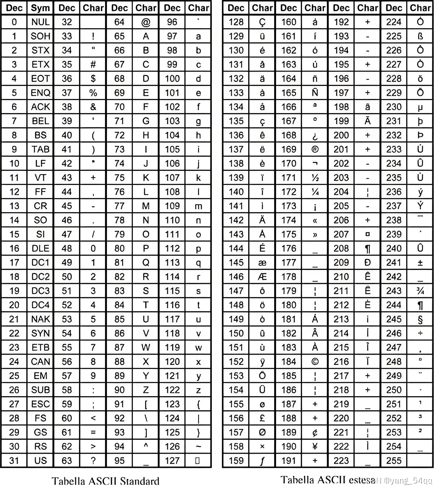
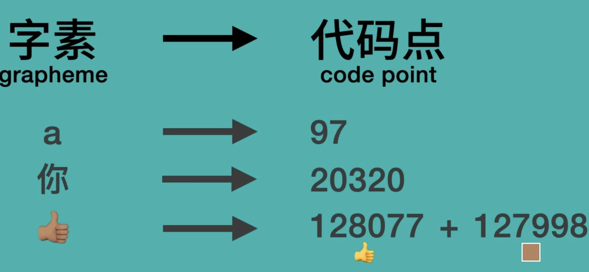

数据在计算机内的存储¶
计算机的硬盘和RAM都只能保存比特0和1，但是实际的信息种类很多：整数、浮点数、字符... 那么要如何保存这些内容呢？唯一的办法就是把建立规则，把这些内容映射为比特0和1的组合。
ascii¶
ascii就是实现了上面的映射的一个规则，只不过，他只考虑了英文的常见符号和字符。

ascii保存了0-127编号的128个字符，只需要一个字节1byte(8bit) 就能表示一个英文字符。 保存字符到计算机时，只需要转换为01序列即可，解码的时候，也只需要按照字节拆分、查表翻译回字符即可。
Unicode标准¶
unicode是一种标准，简单来讲，就是把世界上的一切符号，都对应一个唯一编码。 unicode = unicode字符集 + 多种可选的编码策略。
简单来讲，就是unicode标准这帮人，确定了一个大表，地球人日常用的大部分文字，都在这个表里面有一个序号，例如a就是97，你是20320号，等等。
怎么把这个97数字保存在计算机里面，保存了又怎么去把他转回字符，就是编码规则（策略），例如utf8，utf32。
等等，有人在这里会有困惑了，存一个数字编号还需要什么规则呢？直接转为二进制存不就好了吗？这个问题会在后面的编码规则中详细提到，如果你有这个疑问，原因在于：你或许不知道定长编码和边长编码的一些事情。
可以使用python的ord函数来获取某个字符对应的unicode编号，非常便捷！
| Python | |
|---|---|
1 2 3 4 5 6 7 8 9 10 11 12 13 14 | |
| Python | |
|---|---|
1 2 3 4 5 6 7 8 9 10 11 12 | |
unicode 代码点 以及 字素 grapheme 这些概念。
No character, but grapheme¶
“grapheme 字素 ———— 最小的、有意义的，人类书写单元。”

在unicode中，不再使用“字符”这样的字眼，而使用“字素”grapheme这个称呼。
在英文中，为了组成一个单词，你可能需要多个字母，例如cat需要c，a，t三个字母。
在现代汉语里面，自行车 这个词语需要三个字，自，行，车来构成，c a t 自 行 车 这些单个的就叫字素，耽搁的表情也是一个字素。
我们的unicode编码，实际上就是在对这种能够单独书写的最小单位进行编号，而这种最小单位，就被称为grapheme。
唯一的坑点在于：有的字素对应一个unicode代码点，有的则对应多个。
unicode 码点¶
code point 又是什么？ 在前面我们提到 unicode 标准维护了一张大表，这张表里的每一个东西都对应一个编号，实际上这些表里面的东西就是unicode代码点，前面我们说“为每一个字符编一个号”这实际上是不准确的 😁「请原谅我，毕竟之前我们还没引入字素，代码点这些概念」。
有些字符可以对应一个code point，有的则可以对应两个，例如👍🏻对应一个黄色的👍，和一个白色块；又比如有些字母上面带音标，实际上可能是两个码点：不带音标的字母 和 单独的音标 组合起来的。 “总之，一个看起来的字符（字素），有可能是unicode中的多个代码点的组合。” 如果不直到这一点，下面的代码的运行结果就会出乎意料。 ```python []
test_rune.py¶
Python 3.12.0¶
s1 = "你是这个👍🏻" s2 = "你是这个👍" l1, l2 = len(s1), len(s2) print("l1:", l1) print("l2:", l2)
""" ❯ python test_rune.py l1: 6 l2: 5 """
| Text Only | |
|---|---|
1 2 3 4 5 6 7 8 9 10 11 12 13 14 15 16 17 18 19 20 21 22 23 24 25 26 27 28 29 | |
unicode 编码策略¶
unicode是一种标准，那么怎么对这个标准进行编码？有多个标准，例如utf8, utf16等。
utf32 定长编码¶
使用4字节的定长编码，把所有的代码点都编码为4个字节，32位。 utf32的优点是所有字符，无论常见和罕见，都编码成为相同长度的二进制串，这对于编码和解码十分方便。 缺点是浪费内存。
utf8 变长编码¶
utf8是变长编码，不同范围的代码点，对应的编码长度不一样，兼容ascii。 例如一个汉字，编码之后是三个字节。 utf8编码是变长编码，这样十分节省内存（相较于utf32定长编码来讲），但是在转换的时候就麻烦一点，因为你并不知道当前的这一个字节属于哪个字。
utf8 编码汉字¶
一个汉字在utf8中，经过编码，长度是三个字节，这是为什么？ 原因是在unicode编码标准中，中文汉字的编码范围正好落在 三字节编码的范围内。
 可以使用在线工具进行编码
例如对 “你” 进行编码，结果是 E4BDA0，这是十六进制 对应的二进制是 11100100 10111101 10100000
是三字节。
第一个字节的前面4位是1110，后面两个字节的前两位都是10，这是规定好的。
可以使用在线工具进行编码
例如对 “你” 进行编码，结果是 E4BDA0，这是十六进制 对应的二进制是 11100100 10111101 10100000
是三字节。
第一个字节的前面4位是1110，后面两个字节的前两位都是10，这是规定好的。
1110[0100] 10[111101] 10[100000]
被中括号包围的 4 + 6 + 6 = 16位拼起来，就是0100111101100000
20320 对应的 就是汉字 你
在python中可以用ord函数得到字符对应的unicode码值（十进制）
| Python | |
|---|---|
1 2 3 | |
也可以在go语言中验证
| Go | |
|---|---|
1 2 3 4 5 6 7 8 9 10 11 12 13 14 15 16 17 18 | |
| Bash | |
|---|---|
1 2 3 4 5 6 7 | |
再来看下下面的例子，就能知道 rune 实际上就是 utf8 的代码点。
| Go | |
|---|---|
1 2 3 4 5 6 7 8 9 10 11 12 13 14 15 16 17 18 19 20 21 22 23 24 | |
如果还需要知道一些编码的细节，可以看这个视频